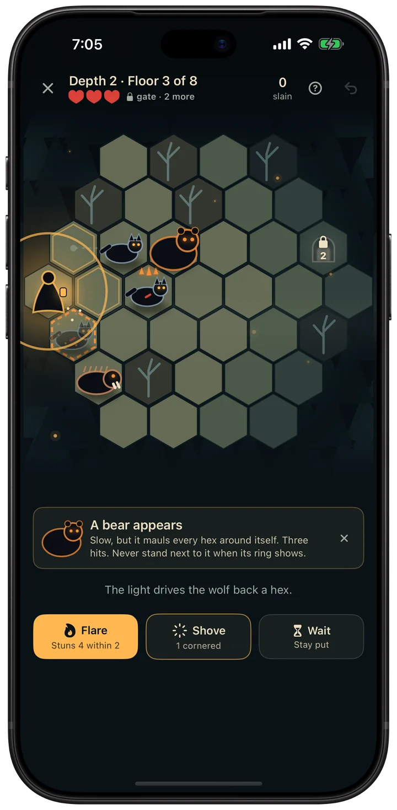
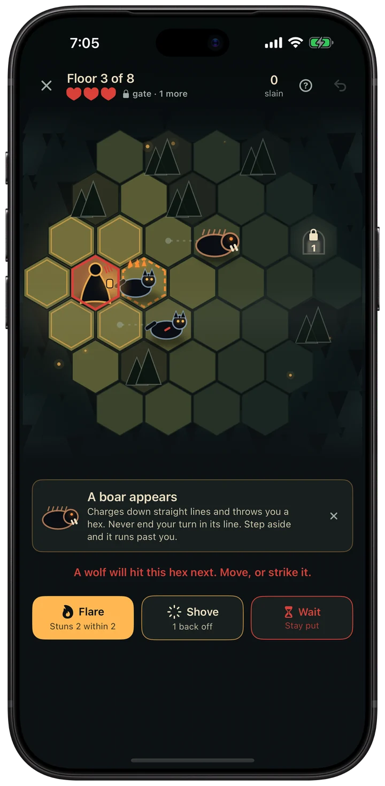
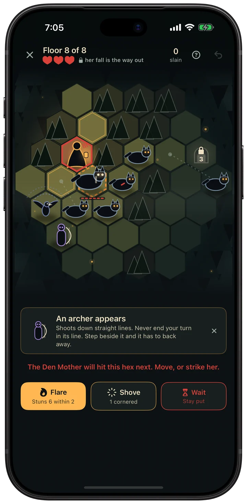
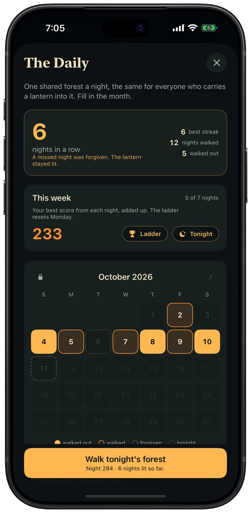

Turn-based forest tactics. Every enemy shows its next move.
Free through Depth 2. No ads. No timers.

Lanternfall is a turn-based tactics game for iPhone, played on small hex boards. You have one lantern and one action a turn, and every enemy shows its next move.
A run is eight floors and takes about ten minutes. Each run is written down as a chronicle page, and there is one shared forest a night. It is for anyone who liked Hoplite or Into the Breach and wants short runs with no luck in them.

Every enemy shows its next move.

The Den Mother waits on eight.

One forest a night.
The details
Price
Free through Depth 2. Lanternfall Deep opens the depths below: $4.99 once (US price). No subscription, no ads, no energy timers.
Checked against the App Store listing on November 10, 2026.
Support
Questions, bug reports, balance complaints, or a floor you think was unfair? Email me at minieriapps+lanternfall@gmail.com. I make Lanternfall on my own and read every message. Give me a couple of days to reply.
Purchases
Lanternfall Deep and the Supporter Pack are one-time purchases tied to your Apple Account. If they don't show up on a new device, open Settings inside the game and tap Restore purchases. Refunds are handled by Apple at reportaproblem.apple.com.
Privacy Policy
Last updated: September 7, 2026
Lanternfall is a single-player game that keeps to itself. This policy says what that means in plain language.
The short version
Lanternfall does not collect, transmit, sell, or share any of your data. Your runs, embers, Camp purchases and settings are stored only on your device. There is no account, no login, and no server of ours. The game works offline.
What we collect
Nothing. No analytics, no advertising, no trackers, no third-party SDKs. We have no servers and no way to see how you play.
Game Center
If you sign in to Game Center, your daily and best-descent scores are sent to Apple's Game Center leaderboards under your Game Center player name. That is optional, handled entirely by Apple under Apple's Privacy Policy, and the game never waits on it. We receive nothing from it.
In-app purchases
Purchases go through Apple's App Store. We never see your payment details. The game keeps a local note of what you own so it works offline.
Where your data lives
On your device. It is included in your device's normal encrypted backups (iCloud Backup or a local backup) if you have those enabled, which is handled by Apple, not by us.
Children's privacy
Lanternfall does not collect any data from anyone, including children.
Changes to this policy
If this policy ever changes, the updated version will be posted here with a new "Last updated" date.